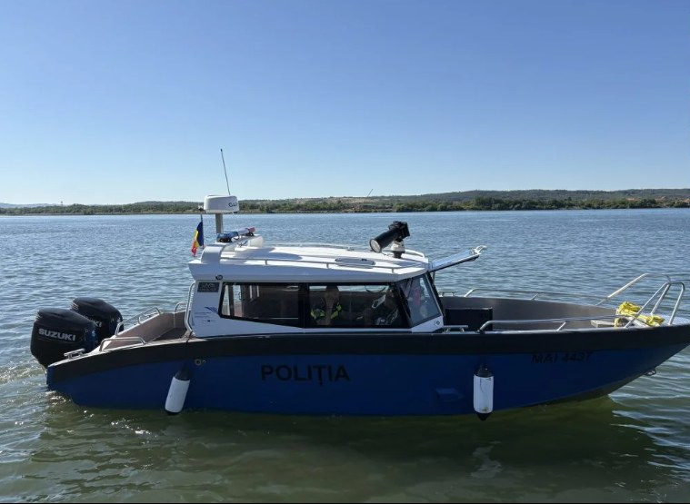
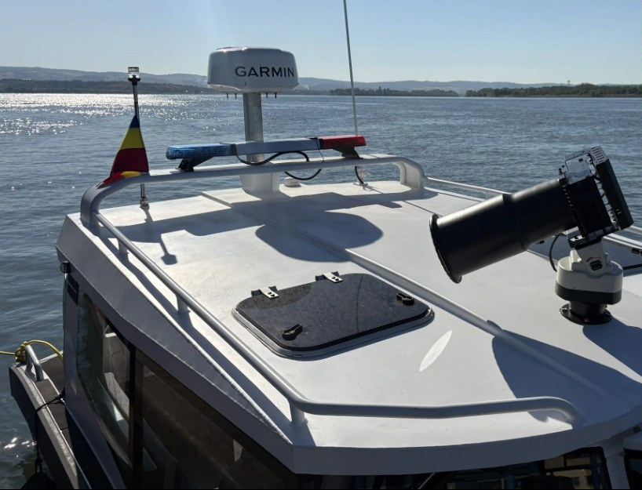
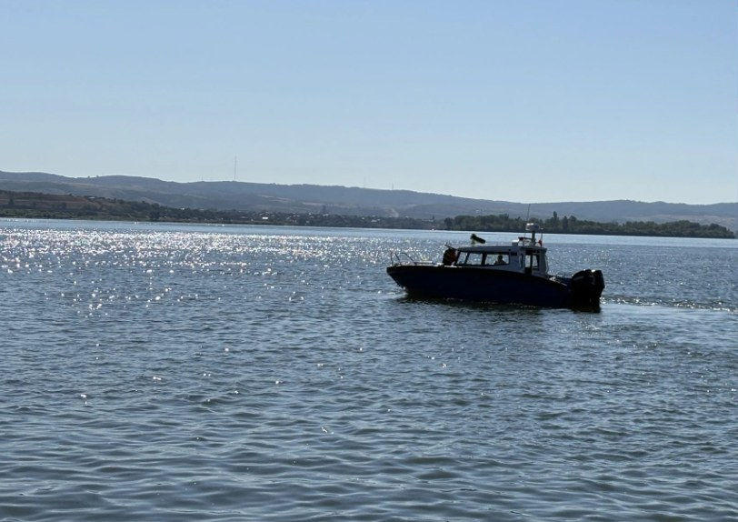

Poliția Transporturi Mehedinți și-a modernizat capacitatea de intervenție pe Dunăre, prin intrarea în dotare a două ambarcațiuni fluviale de patrulare și intervenție, achiziționate în cadrul proiectului european „Safer Climate within the Romanian-Serbian Border Area”.
Una dintre ambarcațiuni a fost prezentată astăzi, 10 iulie, în Portul Drobeta-Turnu Severin, în timp ce cea de-a doua este destinată municipiului Orșova.
Achiziția celor două ambarcațiuni face parte din proiectul transfrontalier „Safer Climate within the Romanian-Serbian Border Area”, derulat cu fonduri europene pentru creșterea capacității de reacție a instituțiilor de ordine publică din zona de graniță dintre România și Serbia, atât în privința siguranței navigației, cât și a răspunsului la efectele schimbărilor climatice asupra Dunării.

Noile ambarcațiuni sunt echipate cu tehnologie de ultimă generație, sisteme moderne de navigație, comunicații și intervenție, care le vor permite polițiștilor să răspundă mult mai rapid la incidentele produse pe Dunăre și să desfășoare misiuni de patrulare, prevenire și combatere a infracționalității, în condiții de eficiență și siguranță sporite.
Cele două ambarcațiuni vor fi repartizate astfel încât să acopere sectorul mehedințean al Dunării: una va rămâne în Portul Drobeta-Turnu Severin, iar cea de-a doua va fi destinată municipiului Orșova, extinzând astfel raza de acțiune a Poliției Transporturi în zona din amonte a județului.
